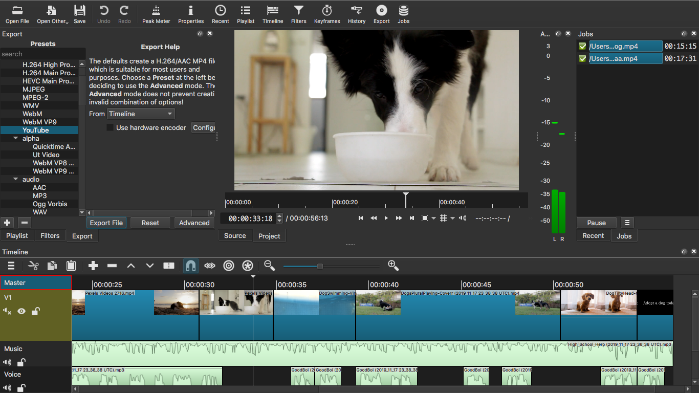

A short description about what you made and how you did it.

Sources:
Video:
Brown Dog Running Free
Video:
A Person with a Cute Brown Puppy Playing with a Tennis Ball on a Flower Bed in the Gardens
Video:
Dog at the Beach
Video:
Thirsty Black and White Dog
Video:
Swimming Golden Retriever
Video:
Dogs Playing
Video:
A Pet Dog Wandering on a Camera
Music: High School Hero by Silent Partner